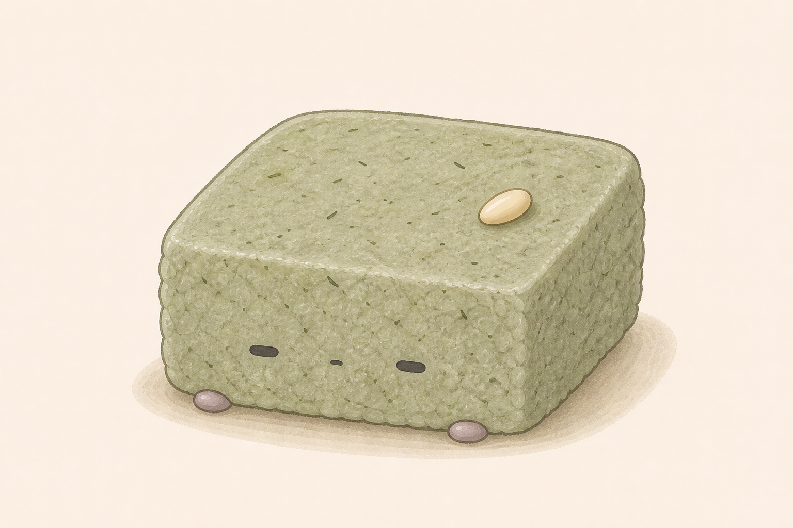
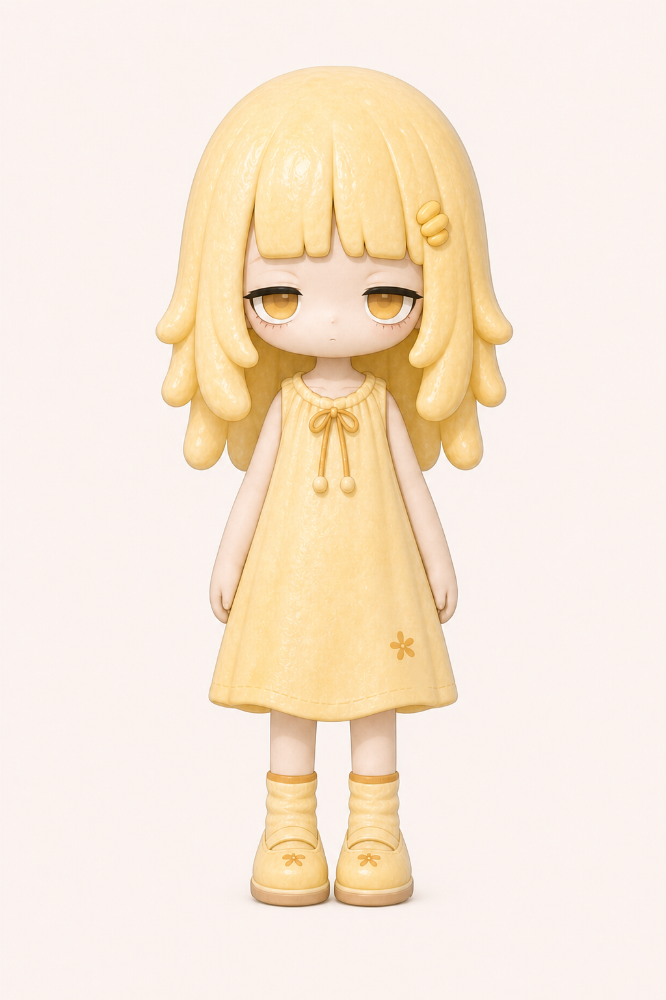
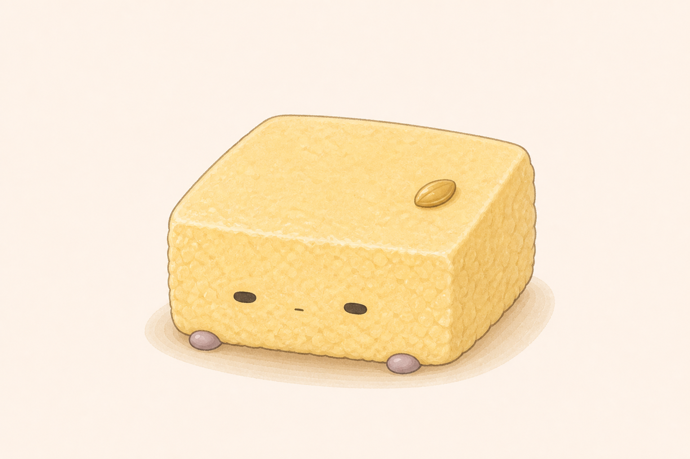
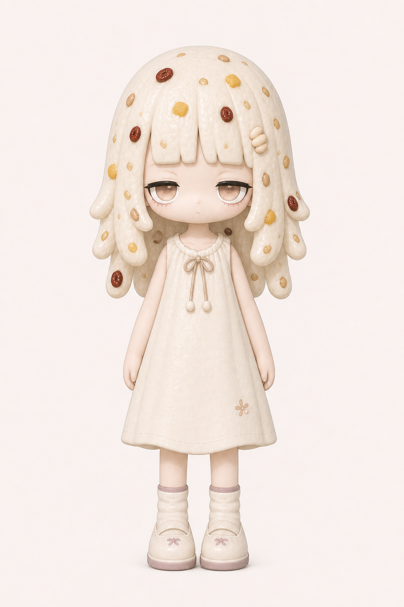
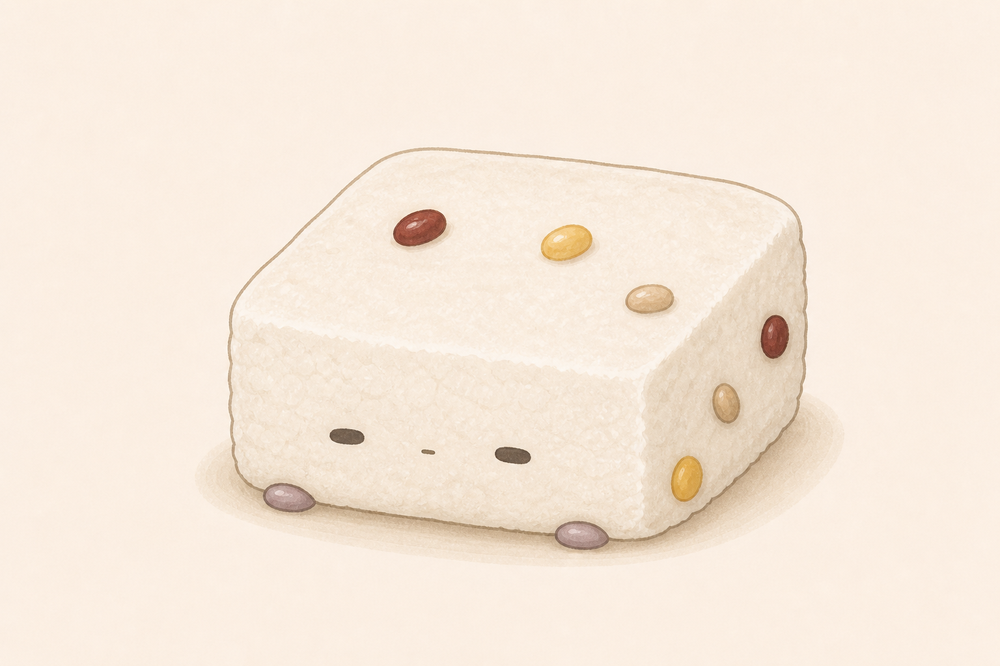
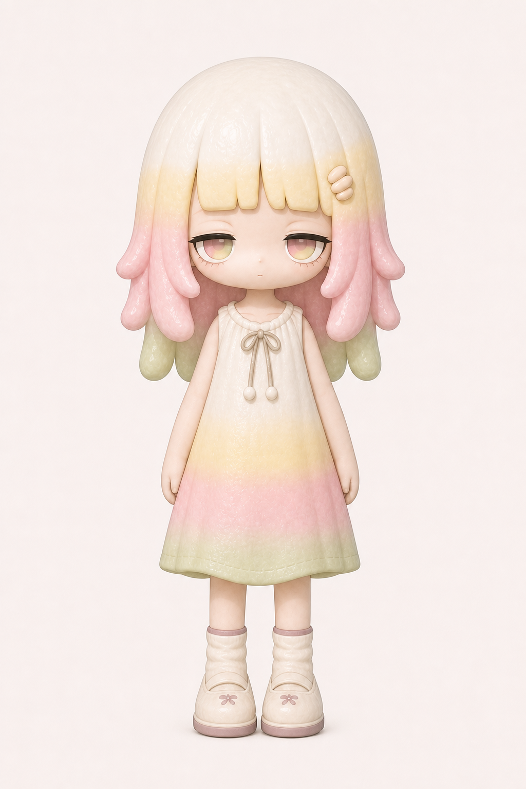

Seolgi SeriesBaekseolgi


Motif: 백설기
담백하고 폭신한 백설기의 결을 가진 첫 번째 설기 캐릭터. 낮에는 차분한 Human Form으로 지내고, 밤이 오면 가장 편안한 Treat Form으로 돌아갑니다.
- Feeling: Calm
- Texture: Soft rice crumb
- Color: Ivory white
Treat Form은 캐릭터의 본질이 가장 순수하게 드러나는 형태입니다.
Character Cards
설기 시리즈의 Human Form과 Treat Form을 함께 정리한 첫 번째 캐릭터 카드 아카이브입니다.
Motif: 백설기
담백하고 폭신한 백설기의 결을 가진 첫 번째 설기 캐릭터. 낮에는 차분한 Human Form으로 지내고, 밤이 오면 가장 편안한 Treat Form으로 돌아갑니다.
Treat Form은 캐릭터의 본질이 가장 순수하게 드러나는 형태입니다.


Motif: 쑥설기
쑥의 은은한 색감과 포근한 향을 담은 설기 캐릭터. 차분하지만 선명한 초록빛 질감이 Human Form과 Treat Form을 연결합니다.
낮에는 Human Form으로 지내고, 밤이 오면 가장 편안한 Treat Form으로 돌아갑니다.


Motif: 호박설기
따뜻한 노란빛과 달큰한 결을 가진 설기 캐릭터. 부드러운 호박색이 성격과 형태의 중심이 됩니다.
Treat Form은 캐릭터의 본질이 가장 순수하게 드러나는 형태입니다.


Motif: 콩설기
작은 콩의 리듬과 고소한 포인트를 캐릭터 감정으로 확장한 설기 캐릭터입니다.
낮에는 Human Form으로 지내고, 밤이 오면 Treat Form으로 돌아갑니다.


Motif: 무지개설기
층층이 쌓인 색감과 밝은 감정을 카드형 캐릭터로 정리한 설기 시리즈의 컬러 포인트입니다.
Human Form의 감정과 Treat Form의 층감이 함께 캐릭터를 완성합니다.